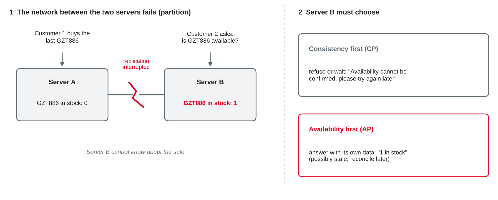
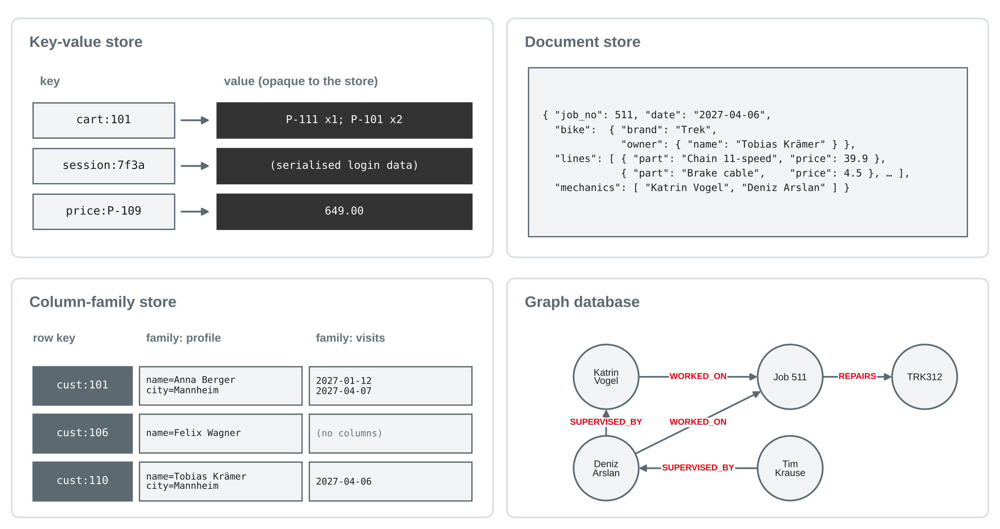

Data Management
Limits of relational systems · CAP and BASE · key-value, document, column-family and graph databases · choosing a data store
DHBW · Digital Business Management (Business IT) · Semester 2
SELECT j.job_no, j.job_date, b.brand, c.name,
p.name, l.quantity, l.price_charged, e.name
FROM repair_job AS j
JOIN bike AS b ON b.frame_no = j.frame_no
LEFT JOIN customer AS c ON c.customer_no = b.customer_no
LEFT JOIN repair_line AS l ON l.job_no = j.job_no
LEFT JOIN spare_part AS p ON p.part_no = l.part_no
LEFT JOIN job_mechanic AS jm ON jm.job_no = j.job_no
LEFT JOIN employee AS e ON e.employee_no = jm.employee_no
WHERE j.job_no = 511; -- 6 rowsOwn example based on the bike shop case from sessions 3–10.
import sqlite3
con = sqlite3.connect("bikeshop.db")
con.execute("PRAGMA foreign_keys = ON")
for script in ["bikeshop-schema.sql", "bikeshop-data.sql",
"bikeshop-data-session09.sql",
"bikeshop-documents-session11.sql"]: # new
with open(script, encoding="utf-8") as f:
con.executescript(f.read())Own example based on the bike shop case; SQLite (n.d.).
Why "NoSQL" appeared
| Pressure | What happens in a relational DBMS |
|---|---|
| Volume and traffic of web-scale applications | one server has limits; spreading tables and joins over many servers is hard |
| Changing or varied structure | every new attribute needs ALTER TABLE; sparse data leaves many NULLs |
| Objects vs. rows ("impedance mismatch") | the app works with a nested object, the database with flat rows and joins |
| Highly connected data | many levels of relationships need many self joins |
Based on Sadalage and Fowler (2013, Chapter 1) and Elmasri and Navathe (2016, Chapter 24).
Scale up (vertical)
A bigger server: more CPU, memory, disks. Simple, keeps ACID and joins — but has an upper limit and a single point of failure.
Scale out (horizontal)
More servers in a cluster. Cheap hardware, almost no upper limit — but the data must be distributed.
Based on Sadalage and Fowler (2013, Chapter 4) and Elmasri and Navathe (2016, Chapter 24).
"Schemaless" does not mean "no structure": the structure moves from the database into the application code that reads the data.
Based on Elmasri and Navathe (2016, Chapter 24) and Sadalage and Fowler (2013, Chapters 1 and 3).
Consistency, availability, partitions
| Property | Meaning |
|---|---|
| Consistency | every read returns the most recent write — all servers show the same data |
| Availability | every request to a working server gets a response |
| Partition tolerance | the system keeps working when the network between servers fails |
Based on Gilbert and Lynch (2002), Brewer (2012) and Elmasri and Navathe (2016, Chapter 24).

Own illustration based on Gilbert and Lynch (2002) and Brewer (2012); fictional extension of the bike shop case.
| CP: consistency first | AP: availability first | |
|---|---|---|
| during a partition | some requests are refused or wait | all requests are answered, maybe with stale data |
| afterwards | nothing to repair | conflicting writes must be reconciled |
| suits | bank balance, stock of the last item, seat booking | shopping cart, product reviews, likes, session data |
Based on Brewer (2012), Vogels (2009) and Sadalage and Fowler (2013, Chapter 5).
| ACID (session 10) | BASE |
|---|---|
| Atomicity, Consistency, Isolation, Durability | Basically Available, Soft state, Eventually consistent |
| pessimistic: block until the state is safe | optimistic: answer now, converge later |
| strong consistency after every commit | replicas may differ for a while |
| typical for relational DBMS | typical for many distributed NoSQL stores |
Based on Pritchett (2008), Vogels (2009) and Haerder and Reuter (1983).
Based on Vogels (2009) and Abadi (2012).
For each operation of a nationwide bike-rental app, decide: consistency first or availability first during a network partition? Give a reason and the business risk of your choice.
Key-value, document, column-family, graph

Own illustration based on Sadalage and Fowler (2013, Chapters 8–11) and Elmasri and Navathe (2016, Chapter 24); examples from the bike shop case.
get(key), put(key, value), delete(key) — very fast, easy to distribute by keyIn Python terms: a key-value store is a dictionary that is shared, persistent and spread over many servers.
Based on Sadalage and Fowler (2013, Chapter 8) and Elmasri and Navathe (2016, Chapter 24).
{ "job_no": 504, "date": "2027-02-02", "description": "Annual service",
"bike": { "frame_no": "RIE420", "brand": "Riese & Müller",
"owner": { "customer_no": 111, "name": "Clara Neumann" } },
"lines": [ { "part_no": "P-103", "quantity": 2, "price": 12.5 },
{ "part_no": "P-107", "quantity": 1, "price": 4.5 } ],
"mechanics": [ "Katrin Vogel", "Sophie Lindner" ] }Based on Sadalage and Fowler (2013, Chapter 9) and Elmasri and Navathe (2016, Chapter 24); document from bikeshop-documents-session11.sql.
Embed (aggregate)
Reference
"customer_no": 111Based on Sadalage and Fowler (2013, Chapters 2 and 9).
A table in Bigtable "is a sparse, distributed, persistent multidimensional sorted map" (Chang et al., 2008, p. 4:2).
Based on Chang et al. (2008), Sadalage and Fowler (2013, Chapter 10) and Elmasri and Navathe (2016, Chapter 24).
MATCH (m:Mechanic)-[:SUPERVISED_BY*]->(:Mechanic {name: 'Katrin Vogel'})
RETURN m.name*Based on Sadalage and Fowler (2013, Chapter 11) and Elmasri and Navathe (2016, Chapter 24).
| Family | Unit of storage | Query by | Strong at | Weak at |
|---|---|---|---|---|
| Key-value | value by key | key only | speed, simple scale-out | content queries |
| Document | JSON document | key and fields | nested objects, flexible fields | cross-document relationships |
| Column-family | row with column families | row key, key ranges | huge write volumes, sparse data | ad-hoc queries, joins |
| Graph | nodes and edges | traversals | deep relationships | bulk aggregation over all data |
| Relational | rows in tables | SQL, any column | integrity, ad-hoc queries, transactions | scale-out, changing structure |
Own summary based on Sadalage and Fowler (2013, Chapters 8–11) and Elmasri and Navathe (2016, Chapter 24).
The same case, two models
SELECT doc ->> '$.job_no', doc ->> '$.bike.model'
FROM repair_job_doc
WHERE doc ->> '$.bike.brand' = 'Trek'; -- 503 | FX 3, 511 | Domane AL 2
SELECT d.job_no,
sum((l.value ->> 'quantity') * (l.value ->> 'price')) AS revenue
FROM repair_job_doc AS d, json_each(d.doc, '$.lines') AS l
GROUP BY d.job_no
ORDER BY revenue DESC LIMIT 3; -- 507 649, 511 103.4, 510 41.8->> takes a value out of a document by its path: $.bike.brandjson_each turns an array into rows — then GROUP BY works as in session 10Based on SQLite (n.d.); own example based on the bike shop case.
| Change | Relational | Documents |
|---|---|---|
| Rename spare part P-106 to "Brake cable, stainless" | 1 row in spare_part | 2 documents (jobs 502, 511) |
| Anna Berger moves to Heidelberg | 1 row in customer | 2 documents (jobs 501, 512) |
| New job for frame GZT889 (typo) | FOREIGN KEY constraint failed | stored without complaint |
| Spare part P-112, never used | in spare_part | in no document |
Own example based on the bike shop case; SQLite (n.d.).
Polyglot persistence: one application can use several stores — e.g. relational for orders, key-value for the cart, a graph for recommendations. Start relational unless a clear reason speaks against it.
Based on Sadalage and Fowler (2013, Chapters 13 and 15).
Fresh database with all four scripts. Predict the result first.
json.loads): owner, number of lines, parts revenuerepair_job. Explain the difference.Choose a data store family for each use case and give two reasons. Name one thing that would be harder than in a relational database.
Team step: which part of your project case could use a document or key-value store — and why will you still build it relationally for milestone 3?
Preparation: finish the hands-on questions and worksheet 11; bring your team's database file and queries for milestone 3 (database and queries, due after session 12) and your open questions.